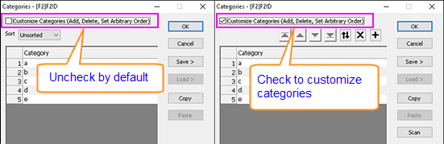
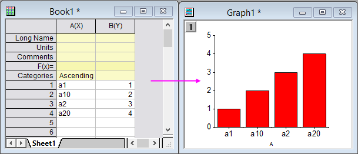
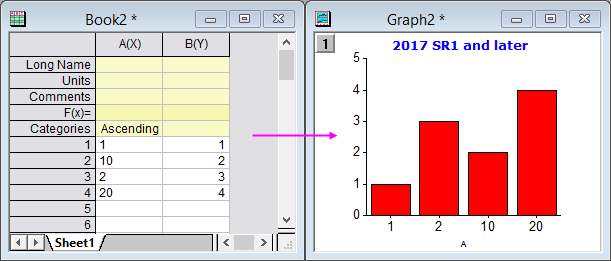
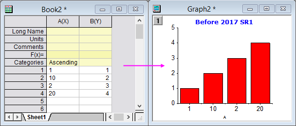
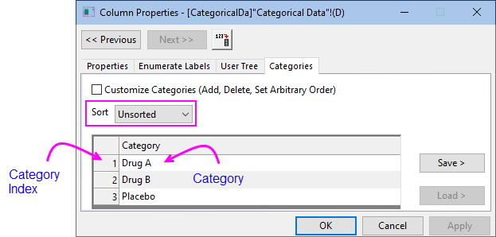

Registerkarte Kategorien (Spalteneigenschaften)
ColProperties-Dialog-Categories-Tab
Die Registerkarte Kategorien des Arbeitsmappendialogs Spalteneigenschaften ermöglicht es Ihnen, die Kategorieeigenschaften einer bestimmten Spalte benutzerdefiniert anzupassen. Sie ist nur verfügbar, wenn für die aktuelle Spalte Als Kategorisch setzen festgelegt ist.
Sie haben ebenfalls Zugriff auf die Bedienelemente dieser Registerkarte, indem Sie doppelt auf die Spaltenbeschriftungszeile Kategorien klicken.
- 
_Categories_Tab/Tip_icon.png) |
Wenn für die Spalte Als Kategorisch setzen festgelegt ist, werden die fehlenden Werte standardmäßig aus der kategorialen Abbildung ausgeschlossen. Um fehlende Werte als Kategorien einzubinden, müssen Sie zuerst die Systemvariable @cats=0 setzen und dann mit der rechten Maustaste auf diese Spalte klicken und Als Kategorisch setzen deaktivieren. Klicken Sie mit der rechten Maustaste erneut auf diese Spalte, um Als Kategorisch setzen zu aktivieren, so dass fehlende Werte jetzt berücksichtigt werden.
|
Kategorien benutzerdefiniert anpassen (Hinzufügen, Löschen, Beliebige Reihenfolge festlegen)
Das Aktivieren dieses Kontrollkästchens ermöglicht Ihnen das benutzerdefinierte Anpassen der Kategorien: Hinzufügen, Löschen oder beliebiges Ordnen der Kategorien. Wenn es deaktiviert ist, werden Kategorien dynamisch aus Spaltendaten erzeugt.
Sortieren
Verfügbar, wenn das Kontrollkästchen Kategorien benutzerdefiniert anpassen (Hinzufügen, Löschen, Beliebige Ordnung festlegen) deaktiviert ist.
| Unsortiert |
Kategoriale Ordnung, bestimmt durch die Reihenfolge des ersten Auftretens in der Spalte
|
| Aufsteigend |
Sortieren der Kategorien in aufsteigender Reihenfolge
|
| Absteigend |
Sortieren der Kategorien in absteigender Reihenfolge
|
Hinweise zur Sortierungsordnung
Die Sortierungsordnung bestimmt die Zeichnungsordnung. In den folgenden zwei Beispielen enthält Spalte B(Y) numerische Daten und Spalte A(x) ist Auf kategorisch gesetzt und in aufsteigender Reihefolge sortiert. Beachten Sie, dass das Sortieren nicht die Arbeitsblattdaten sortiert; es sortiert vielmehr die Kategorien zum Zeichnen.
- 
- 
Vor Origin 2017 SR1 wären die Kategorien im zweiten Beispiel (ausschließlich numerische Daten) alphabetisch sortiert worden, was zu einer anderen Zeichenreihenfolge geführt hätte, wie im Folgenden zu sehen:
- 
Kategorie
Die Kategorieelemente in der aktuellen Arbeitsblattspalte und ihre aktuelle Ordnung werden angezeigt.
- 
Der Kategorienindex wird gemäß der Sortierreihenfolge der Kategorien oder, falls unsortiert, nach der Reihenfolge in dieser Kategorienliste zugewiesen.
|
Seit Origin 2020b können Sie zwischen der Anzeige von kategorie und Kategorienindex in der Arbeitsblattspalte hin- und herschalten, indem Sie auf die Schaltfläche Kategorienindizes zeigen auf der Minisymbolleiste des Arbeitsblatts auf Seitenebene klicken.
|
Schaltflächengruppe für Kategorie
Wird gezeigt, wenn das Kontrollkästchen Kategorien benutzerdefiniert anpassen (Hinzufügen, Löschen, Beliebige Ordnung festlegen) aktiviert ist.
| Gruppenliste |
Dieser Teil enthält ein Anzeigefeld und eine Symbolleiste mit sieben Schaltflächen (siehe unten), um die Kategorienliste zu bearbeiten:
- Schaltfläche Nach oben verschieben
_Categories_Tab/Category_Tab_Button_ToTop_92.png)
- Das Kategorieelement wird ans obere Ende der Liste verschoben.
- Schaltfläche Nach oben verschieben
_Categories_Tab/Category_Tab_Button_Move_Up_92.png)
- Das Kategorieelement wird eine Position auf der Liste nach oben verschoben.
- Schaltfläche Nach unten verschieben
_Categories_Tab/Category_Tab_Button_Move_Down_92.png)
- Das Kategorieelement wird eine Position auf der Liste nach unten verschoben.
- Schaltfläche Nach unten verschieben
_Categories_Tab/Category_Tab_Button_ToBottom_92.png)
- Das Kategorieelement wird ans untere Ende der Liste verschoben.
- Schaltfläche Umkehren
- Die Reihenfolge der Kategorieelemente in der Liste wird umgekehrt.
- Schaltfläche Löschen
_Categories_Tab/Category_Tab_Button_Delete_92.png)
- Das ausgewählte Kategorieelement wird aus der Liste gelöscht.
- Schaltfläche Hinzufügen
- Es wird ein neues Element zu der Kategorieliste hinzugefügt.
|
Speichern, Laden, Kopieren, Einfügen, Scannen
| Speichern |
Speichern Sie die Kategorien, die im Feld Kategorie als eine TXT-Datei angezeigt werden, im Unterordner Anwenderdateien\Categories. Die existierenden TXT-Dateien werden im Ausklappmenü aufgelistet.
|
| Laden |
Laden Sie eine Kategoriedatei (.txt) als aktuelle Spaltenkategorien. Die existierenden Kategorie-Textdateien im Unterordner Anwenderdateien\Categories werden im Ausklappmenü aufgelistet.
|
| Kopieren |
Kopieren Sie die aktuellen Spaltenkategorien in die Zwischenablage.
|
| Einfügen |
Fügen Sie die in der Zwischenablage gespeicherten Kategorien in andere Spalten ein, um Kategorien zu teilen.
|
| Scannen |
Scannen Sie die aktuelle kategoriale Spalte und hängen Sie die neu gefundenen Kategorien an die aktuelle Kategorieliste an, wenn es welche gibt.
|